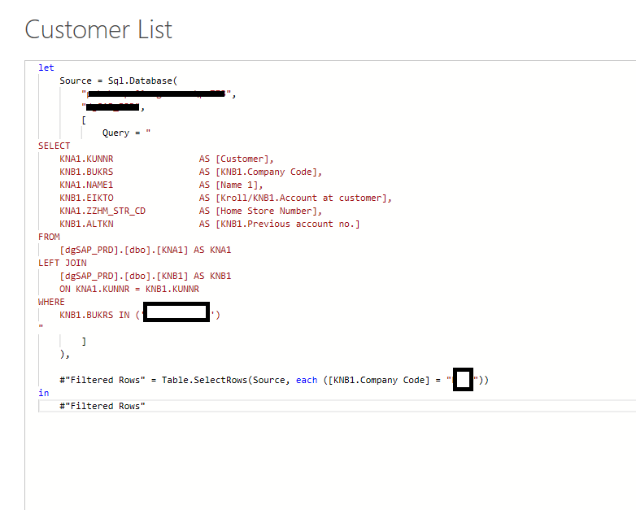
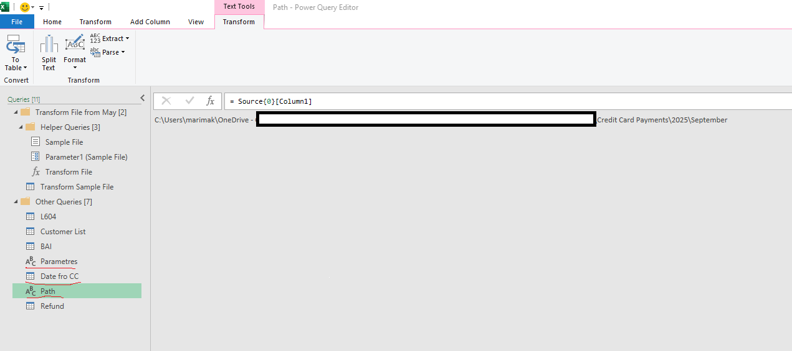

Automating Credit Card & Online Payment Data Transformation
Problem:
In a high-volume finance environment, daily credit card and online payment files needed to be reconciled against bank deposit reports and accurately posted to the correct client accounts in the internal reconciliation system (HRC). Previously, this process required manual data cleanup, matching, and formatting, which was both time-consuming and error-prone. I developed a fully automated pipeline that connects multiple data sources (including SQL Server) to clean, transform, validate, and prepare these files for upload — reducing processing time from ~1 hour to 5 minutes and ensuring 100% alignment with bank and customer account data.
Solution
Analyzed the manual reconciliation workflow and identified key pain points related to data inconsistency and lack of validation.
Designed and built a parameter-driven Power Query pipeline integrating SQL Server to retrieve the latest Customer List daily to automate the data cleaning and transformation process.
Implemented automated validation logic to flag discrepancies between payment reports and bank deposits before loading into HRC.
Used Excel VBA macros to simplify the process for end users by enabling one-click updates and exports.
Result
- Time Saved: Reduced daily processing time significantly (exact hours depend on volume)
- Accuracy Improved: Automated control step ensures payment data aligns with bank deposits before upload
- Ease of Use: Designed for non-technical users — all they need to do is drop in the new file and click a button
- Scalability: Works with any number of daily files thanks to dynamic parameters
Tech Stack
- Power Query (ETL – extract, transform, load with parameterized data sources)
- SQL Server (live connection to customer data)
- Excel VBA (for automation)
- Daily bank reports for validation
Code Example
SQL Connection
Power Query connected directly to SQL Server to pull live customer account data, ensuring payment records are matched correctly.
Power Query Parameterization
Dynamic file paths and sheet names allow the queries to adapt automatically to daily files without manual editing.